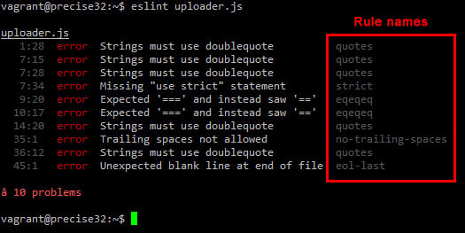

To make the code easier to read so that anyone can figure out what is going on by setting a standard that everyone follows. In my first ever ICS class we had to use a coding standard that required commenting on almost everything, from the function name and purpose, to each individual line for variables and return statements. But now in 314, we don’t have to comment on anything despite having the same teacher and we still have a coding standard so why did it change?
Coding standards exist for different purposes. In my first ICS class we were new to coding so it was helpful for us to just reflect on what certain functions actually did. In 314 however, we should already know what they do and spending extra time commenting on functions would just be a waste of time.
When I was trying to figure out if there was a study on coding standards, like a study that said something along the lines of, we found out that programmers could more easily read the code when there were 4 new lines between each function compared to only 3 by X percent. But there was nothing like that, instead I found a research paper that stated the most obvious thing ever:
“The differences indicate that Data Science codebases are distinct from traditional software codebases and do not follow traditional software engineering conventions. Our conjecture is that this may be because traditional software engineering conventions are inappropriate in the context of Data Science projects.”
Coding standards for Data Science projects would be different from the coding standards of traditional software. But this just supports the statement that different coding standards achieve different things.
Maybe someday there will be a definitive study on different types of coding projects with guidelines of if there’s 4 or more functions, then the best way to make it readable would be to do y. But today, there’s no such document, so just follow the basics that everyone can agree upon such as no extra empty lines at the bottom of code, you know just stuff that there would be no downside to. Make it easier for everyone and yourself.